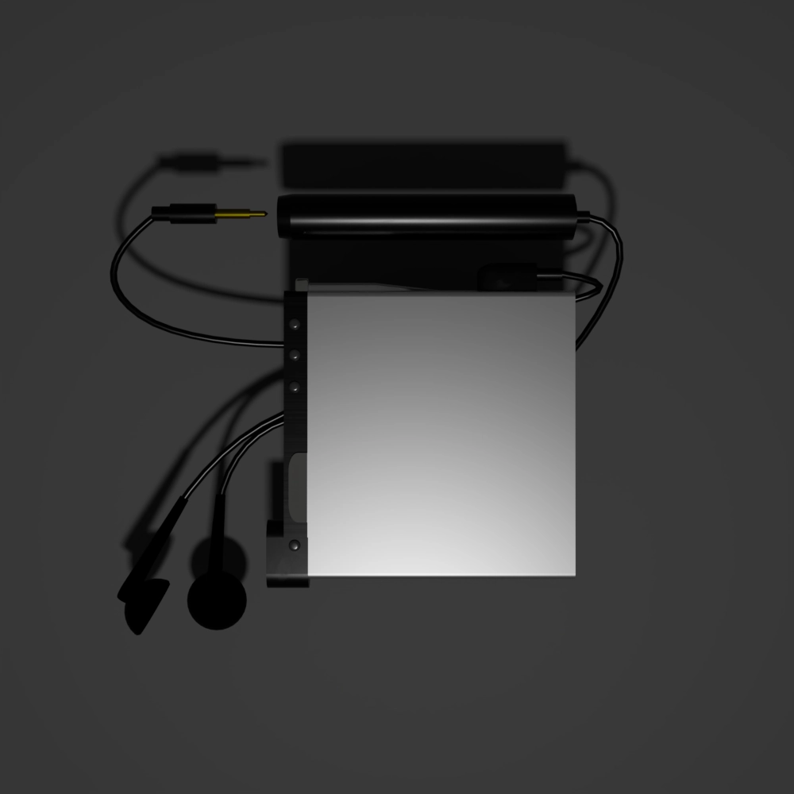

MDPlayer

MDプレーヤーは、MiniDisc（MD）という小型のディスクメディアを再生・録音できる機器です。CDよりもコンパクトで持ち運びやすく、 録音・編集が自由にできる点が大きな特徴です。特に、曲の分割や削除、並べ替えが簡単に行えるため、自分だけのプレイリストを手軽に作成できます。 また、音質は圧縮されているものの、当時としては高品質で、ポータブル機として優れていました。現在では生産終了が多いものの、レトロ音楽メディアとして根強い人気があります。
SONYのMDプレーヤーは、その高い技術力と使いやすさ、音質の良さにあります。SONYはMD規格を開発したメーカーであり、最も信頼性の高い製品を数多く世に送り出してきました。 再生だけでなく録音や編集機能にも優れ、特に「Net MD」や「Hi-MD」対応機種はPCと連携でき、曲の管理や転送が非常にスムーズです。また、デザインも洗練されており、コンパクトで持ち運びやすく、 携帯音楽プレーヤーとしての完成度が高い点も魅力です。音楽を「録って楽しむ」文化を象徴する一台として、今なお選ばれる価値があります。